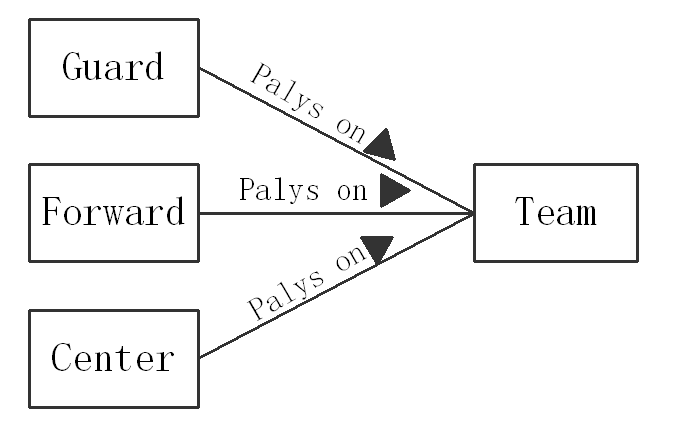

类图
类的可视化表示
类是有着相同结构、行为和关系的一组对象的描述符号。所用的属性与操作都被附在类或其他类元上。类是面向对象系统组织结构的核心
类描述一类对象的属性(Attribute)和行为(Behavior)
名称
每个类都必须有一个名字，用来区分其它的类。类名是一个字符串。
简单名：单独的名称。
路径名：用类所在的包的名称作为前缀。例如Wall、java::awt::Wall都是合法的类名。
属性
是已被命名的类的特性，它描述了该特性的实例可以取值的范围
类的属性在该类的对象中都有具体的值
UML还允许指定属性的附加信息。
操作
是类能够做的事情，或者（或另一个类）能对类做的事情
关系
关系是事物间的连接
图形上：一条线，不同线表示不同种类的关系
面向对象建模中的重要关系：
- 关联关系：描述对象间的结构关系
- 继承与泛化：描述类间“一般”与“特殊”的关系
- 依赖关系：描述类间的使用关系
关联
关联是两个或多个特定类之间的关系，它描述了这些类元实例的联系。
- 一种结构关系
- 从一个类可以导航到另外一个类
参与其中的类元在关联内的位置有序，在一个关联中同一个类可以出现在多个位置。
关联关系是所有关系中最通用的，语义最弱
可用于关联关系的基本修饰：名字、角色、多重性
名称
角色
两个类之间的不同关联

多个类可以和同一个类关联

多重性
多重性是指某个类有多个对象可以和另一个类的单个对象关联
表示方法：在参与关联的类附件的关联线上注明多重属性，数值的位置可以在关联线的上边或下边
UML使用星号（*）来代表许多和多个。在语境中，一般情况下，两点表示“到”的含义，如12..18，逗号表示“或”的关系。


继承和泛化
在解决复杂性问题时，通常需要将具有共同特性的元素抽象成类别，并通过增加其内涵而进一步分类。
泛化（继承）关系描述了一般事物与该事物的特殊种类之间的关系，也即父元素和子元素之间的关系
子元素继承父元素所具有的结构和行为，通常子元素还要添加新的结构和行为，或者修改父元素的行为
类之间的泛化关系表示子类继承一个或多个父类的结构和行为
依赖
如果一个模型元素的变化会影响另一个模型元素（这种影响不必是可逆的），那么就说这两个模型元素之间存在依赖关系
有两个元素，如果修改元素X的定义可能会引起对元素Y的定义的修改，则称Y元素依赖于元素X。
A依赖B——A使用B，B的变化会影响到A通常，B在A的操作的参数中

类图和对象图
类图
需要注意的是,虽然在软件开发的不同阶段都使用类图,但这些类图表示了不同层次的抽象。
在需求分析阶段，类图是研究领域的概念；在设计阶段，类图描述类与类之间的接口；而在实现阶段，类图描述软件系统中类的实现。
通常包含：
- 类、接口
- 依赖、泛化和关联关系
- 包、子系统
- 注解和约束
对象图
模拟类图中所含有的类的实例
表示一组对象及它们之间的联系
对象图中包含对象和连接
在UML中，对象图的使用相当有限，主要用于表达数据结构的示例，以及了解系统在某个特定时刻的具体情况等。
聚集、组成、接口和实现
聚集（聚合）
是一种特殊形式的关联。
表示类之间的关系是整体与部分的关系。
一辆轿车包含四个车轮、一个方向盘、一个发动机和一个底盘，这是聚集的一个例子。在需求分析中，“包含”、“组成”、“分为……部分”等经常设计成聚集关系。
组成
组成（组合）：是聚集的变种，它加入了一些重要的语义。
聚集可以进一步划分成：共享聚集(Shared Aggregation)和组成。
部分可以参加多个整体，我们称之为共享聚集。
例如，课题组包含许多成员，但是每个成员又可以是另一个课题组的成员。
整体拥有各部分，部分与整体共存，如整体不存在了，部分也会随之消失，这称为组成。
例如，我们打开一个视窗口,它就由标题、外框和显示区所组成。一旦消亡则各部分同时消失。
接口和实现
接口就是规定类或组件服务的操作的集合。
接口的理解：接口是一个事物（该事物是类或构件）的内部和外部通讯，从数据的初始化到数据的输入输出的实现，接口在中间起“关卡”作用。一是将数据从一端取得发给另一端；一是检验数据的合法性，并监督取什么数据和怎样取数据。
实现是一种关系，是一种将模型元素（如类）与另一种模型元素（如接口）连接起来，其中接口只是行为的说明而不是结构或者实现。
实现和继承：
- 相似之处：类可以使用接口的操作，也可以从父类继承操作。
- 不同之处：类不能使用接口中的属性，但可以继承父类的属性。
接口的表示
右下角的飞翔，它表示一个接口图，与类图的区别主要是顶端的<>显示。第一行是接口名称，第二行是接口方法。接口还有另一种表示方法，俗称棒棒糖表示法。唐老鸭是能讲人话的鸭子，实现了讲人话的接口。
棒棒糖表示法：
ProximitySensor类实现了ISensor接口，而TheftAlarm类则需要一个ISensor接口。